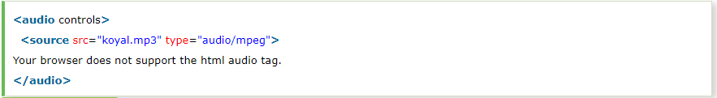
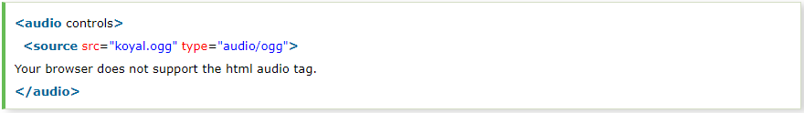
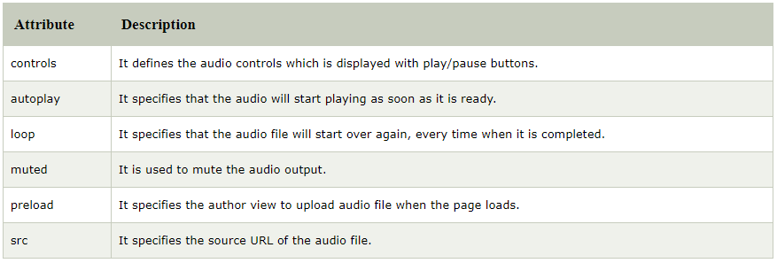
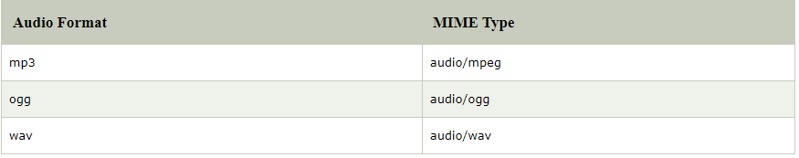

HTML audio tag is used to define sounds such as music and other audio clips. Currently there are three supported file format for HTML 5 audio tag.
HTML5 supports <video> and <audio> controls. The Flash, Silverlight
and similar technologies are used to play the multimedia items.
This table defines that which web browser supports which audio file
format.
Let's see the code to play mp3 file using HTML audio tag.
Let's see the example to play ogg file using HTML audio tag.
There is given a list of HTML audio tag.
Here we are going to use controls, autoplay, loop and src attributes of HTML audio tag
The available MIME type HTML audio tag is given below.
